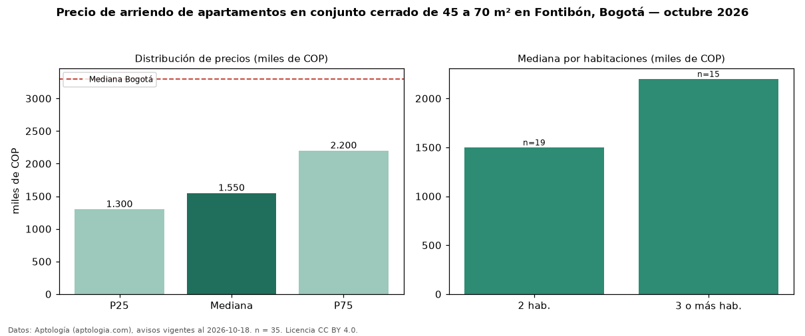

Precio de arriendo de apartamentos en conjunto cerrado de 45 a 70 m² en Fontibón, Bogotá — octubre 2026
COP 1,55 millones al mes es el canon mediano de apartamentos en conjunto cerrado de 45 a 70 m² en arriendo en Fontibón, Bogotá (n = 35 avisos). Frente a la mediana de los apartamentos en conjunto cerrado en arriendo de Fontibón (COP 1,50 millones, n = 72), queda 3 % por encima; este segmento reúne el 49 % de esos avisos. Por metro cuadrado, la mediana es COP 31.522/m² al mes (n = 35), 12 % por debajo de los apartamentos en conjunto cerrado en arriendo de Fontibón (COP 35.635/m²). El área mediana anunciada es 50 m². El segmento con más oferta es el de 2 habitaciones (19 avisos, mediana COP 1,50 millones); pasar de 2 habitaciones a 3 o más habitaciones cambia la mediana +47 %. El estrato más frecuente es 3 (66 % de los avisos con estrato). La mediana de todos los apartamentos en arriendo de Bogotá es COP 3,30 millones (−53 % de diferencia). La mitad central de los avisos va de COP 1,30 millones a COP 2,20 millones (razón 1,7), una dispersión moderada. Datos: Aptología (aptologia.com), CC BY 4.0 — https://www.aptologia.com/arriendo/bogota/fontibon. Archivos: PDF, CSV con las cifras y gráfica PNG.

| Avisos únicos | 35 |
|---|---|
| Percentil 25 | COP 1.300.000 |
| Mediana | COP 1.550.000 |
| Percentil 75 | COP 2.200.000 |
| Mediana por m² | COP 31.521 |
Fuente: avisos vigentes de portales inmobiliarios recopilados por Aptología, deduplicados (mínimo 30 avisos únicos por celda). Precios pedidos, no cerrados. Fecha: 2026-10-18.